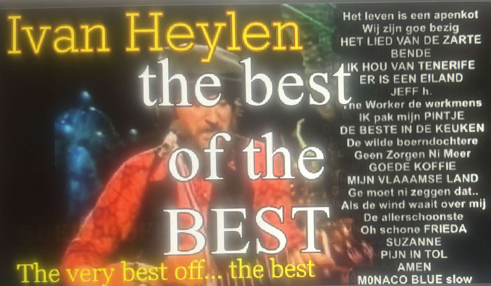

Hallo Assenede
Het is een grote eer en een bijzonder voorrecht geboren te zijn in zulke mooie samengestelde nieuwe gemeente:
OostAsseBasseBoeke
Oosteeklo/Assenede/Bassevelde/Boekhoute.
Na tachtig jaren passievol zoeken in alle landen van de wereld naar geluk vrede en kultuur. Is de cirkel rond.
Nu mijn dood nadert staat mijn besluit vast : een graf. Niet in een ver land, maar in Groot-Assenede, meer bepaald in de Oosthoekstraat te Oosteeklo. In een graf tussen mijn tantes Germaine en Leona, mijn vader Harry en mijn moeder Lea. Bijnvoorkeur in een ruwe houten kist.
Dit is mijn laatste wens. En nu ga ik nog een jaar of veertien, vijftien genieten van de zon boven Tenerife en mijn kinderen en kleinkinderen.
Als afscheid aan de mensen die mij graag hebben gezien publiceer ik vanaf vandaag alle episodes van de film waar ik 28 jaar heb aan gewerkt. Het is een muzikale impressioneel komisch romantisch drama in vele afleveringen. Een biografie met veel fantasie, satire, metaforisch en staalblauwe realiteit. Het is geen gewone overbodig filmwerk. Aan de mensen die zich gekrent beledigt of vergeten voelen.., Wat denk je? Wees blij dat het dit gemaakt is door een rechtvaardig , wijs man, het kon erger.
Veel kijkplezier Iblove you all!
De inkom is gratis.
MUZIKALE IMPRESSIE ONGEWOON en verrassend van een baanbrekend LEVEN
ECHTE DIEPE SCHOONHEID WORTELT IN DE ZIEL EN... ZIELEN STERVEN NIET. Zielen zijn authentieke qauntum energie en leven voor altijd. LIEFDE DIE DE ZIEL RAAKT STERFT NIET... HET LEVEN WORDT MOOIER EN MOOIER. Hoe meer we LEVEN hoe schoner we worden EN hoe boeiender het leven wordt. HYPER EIGENTIJDSE en MUZIKALE filmische IMPRESSIE van een man met BIJZONDER levensloop, een 80 jarige zoektocht naar een romantisch leven zonder regels tax of voorgekauwde waarheden. Een vernieuwende kijk op verleden en toekomst. EEN KLEINKUNSTFILM met een zeer grote 'K' VERFRISSEND, liefde groeit overal, is hemels 'onkruid', haat komt uit de hel. .. Wijsheid groeit in mensen. LOVE YOU ALL cxxx
Aan alle mensen die zich gebruikt, misbruikt, of te kort gedaan voelen, het was en is niet de bedoeling en ik betaal een pintje of beter !! Aan alle mensen die ondertussen overleden zijn, twee maanden aflaat.
De FILM 'Wenende mensen lachen met tranen'.
Introductie. Inleiding tot de 48 delige video serie !